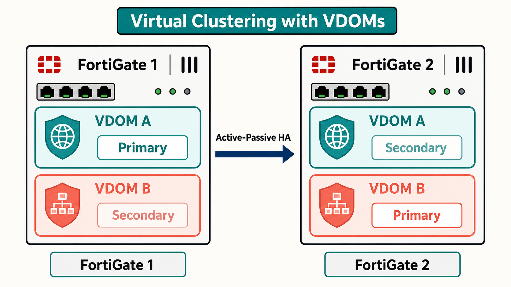
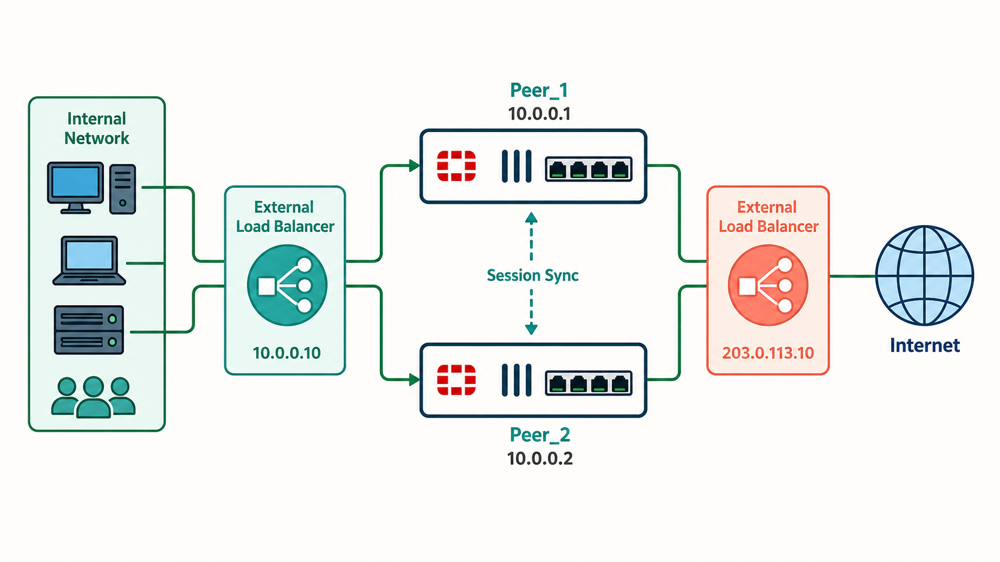
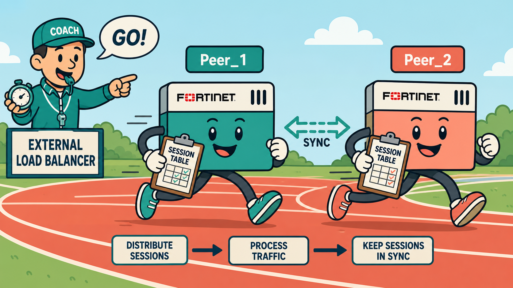
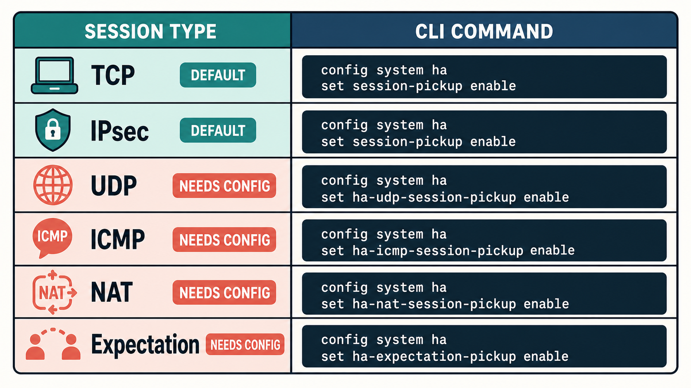
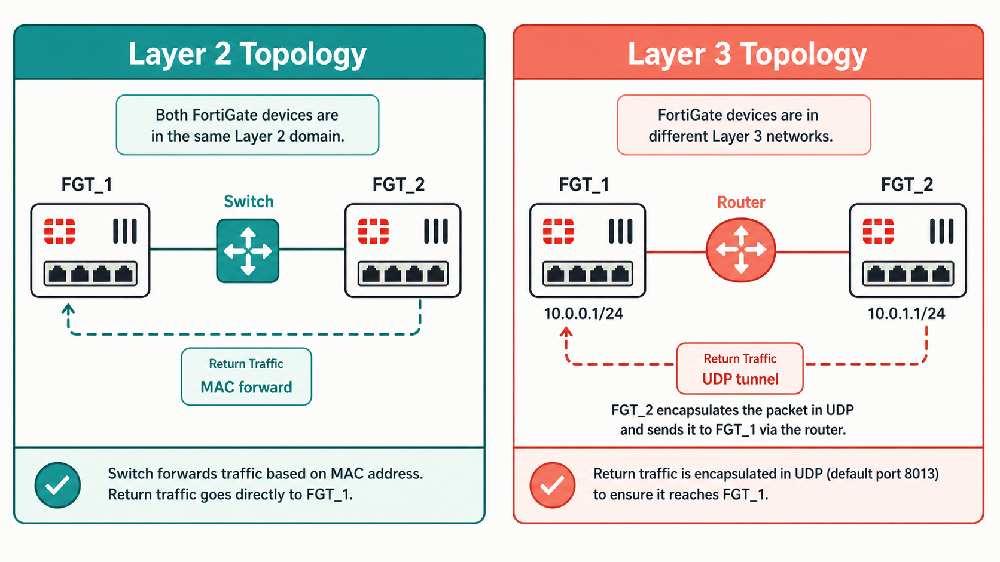
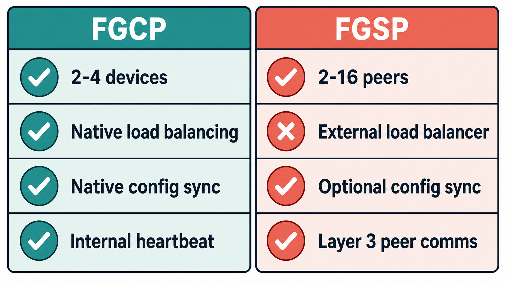

Virtual clustering extends FGCP to environments with multiple VDOMs, enabling each cluster device to serve as primary for a different set of VDOMs simultaneously. This is a more nuanced form of HA than simply having one primary and one standby.
- In VDOM partitioning, both FortiGate devices are active simultaneously — yet HA mode is set to active-passive. Why does active-passive make sense here, and what happens during a failover?
- Virtual clustering is limited to 30 virtual clusters. What is the implication for environments with more than two FortiGates needing multi-VDOM HA?
Virtual Clustering & VDOM Partitioning

VDOM partitioning: FGT1 is primary for VDOM A, FGT2 is primary for VDOM B.
Virtual clustering is an extension of FGCP for FortiGate devices with multiple VDOMs enabled. It operates in active-passive mode and allows each cluster device to act as the primary for a different subset of VDOMs — a technique called VDOM partitioning. The cluster is limited to a maximum of 30 virtual clusters and is only supported between two FortiGate devices.
In VDOM partitioning, traffic for each VDOM is processed by whichever device is primary for that VDOM. During a failover, the surviving device takes over as primary for all VDOMs. VDOM partitioning distributes normal load across both devices, but does not provide load balancing of individual sessions within a VDOM — that remains per-primary-device.
# On NGFW-1 (primary for VDOM1, secondary for VDOM2)
config system ha
set mode a-p
set vcluster-status enable
config vcluster
edit 1
set override disable
set priority 200
set vdom "VDOM1" "root"
next
edit 2
set override disable
set priority 50
set vdom "VDOM2"
next
end
end
# On NGFW-2 (secondary for VDOM1, primary for VDOM2)
# set priority 100 for VDOM1, set priority 200 for VDOM2FGSP is fundamentally different from FGCP: it relies on external load balancers for traffic distribution and does not use a primary/secondary model for traffic processing. All devices operate as peers. This makes FGSP ideal for environments where network topology prevents FGCP from working effectively.
- FGSP can support 2–16 standalone FortiGates or 2–16 FGCP clusters. Why might you use FGCP clusters as FGSP peers rather than standalone FortiGates?
- What is the critical difference between FGSP's approach to load balancing vs FGCP's active-active mode?
FGSP Overview and Topology

FGSP topology: external load balancers direct traffic to FortiGate peers; peers share session tables.
The FortiGate Session Life Support Protocol (FGSP) is an HA solution focused exclusively on session sharing between peer FortiGate devices — it does not handle traffic distribution itself. Load balancing is performed by external network devices (load balancers), while FGSP ensures session tables are synchronized across all peers so that failover is seamless.
FGSP supports 2–16 standalone FortiGate devices or 2–16 FGCP clusters (two members each) as peers. Adding more devices increases CPU and memory overhead because all peers must stay synchronized. By default, FGSP synchronizes all IPv4 and IPv6 TCP sessions and IPsec tunnels. Additional session types require explicit configuration.
config system standalone-cluster
config cluster-peer
edit 1
set peerip 10.10.10.1
next
end
set standalone-group-id 1
set group-member-id 1
endFGSP is like a relay team with a shared memory — any runner can pick up where the last left off, because they all know exactly what happened.
- External load balancer — the coach deciding which runner starts each race
- FGSP session sync — the shared mental map every runner carries, so handoffs are seamless
- FGCP active-active — one coach AND one lead runner who hands off laps, not the coach directly

FGSP session sync keeps all peers' session tables identical so that any peer can handle any packet of any session without disruption. But not all session types are synchronized by default — and how synchronization is secured matters in multi-datacenter deployments.
- Why are UDP and ICMP sessions NOT synchronized by default in FGSP — and why might you want to enable connectionless session sync anyway?
- When would you encrypt FGSP session synchronization traffic, and what is the mechanism used?
Session Synchronization Configuration

Session types and sync configuration: TCP/IPsec by default, others require explicit config.
By default, FGSP synchronizes all IPv4 and IPv6 TCP sessions and IPsec tunnels. Additional session types must be explicitly enabled. The table below summarizes the available options:
| Session Type | CLI Command |
|---|---|
| UDP and ICMP (connectionless) | set session-pickup enable + set session-pickup-connectionless enable |
| Expectation sessions (SIP, FTP pinholes) | set session-pickup-expectation enable |
| NAT sessions | set session-pickup-nat enable |
Session synchronization can also be filtered — you can limit sync to traffic from specific source interfaces, destination interfaces, or IP address ranges using the session-syn-filter option under each cluster peer configuration.
For inter-datacenter deployments, FGSP session sync can be encrypted using an automatic IPsec tunnel. Enable encryption enable and set psksecret under config system standalone-cluster. The required IPsec VPN and policies are created automatically. Encryption is supported for Layer 3 connections only.
# Enable additional session types
config system ha
set session-pickup enable
set session-pickup-connectionless enable
set session-pickup-expectation enable
set session-pickup-nat enable
end
# Enable sync encryption (Layer 3 only)
config system standalone-cluster
set encryption enable
set psksecret fortinet
end
# Layer 2 session sync interface
config system standalone-cluster
set session-sync-dev port4
endAsymmetric routing — where forward and return packets traverse different firewalls — breaks stateful inspection unless the firewall that didn't see the first packet can obtain the session context. FGSP has two strategies for this depending on whether Layer 2 connectivity exists between peers.
- In the Layer 2 asymmetric traffic use case, why does traffic "bounce" from FGT_2 back to FGT_1 instead of FGT_2 just inspecting it directly?
- What does setting
layer2-connection unavailablechange about how FGSP handles asymmetric traffic in a cloud environment?
Asymmetric Traffic Inspection

Layer 2 vs Layer 3 asymmetric forwarding: traffic bounces to session owner for inspection.
When FGSP peers handle asymmetric traffic (forward path via Peer_1, return path via Peer_2), security inspection requires all packets of a session to reach the session owner — the device that processed the first packet. FGSP provides two mechanisms for this based on Layer 2 availability:
Use Case 2 — Layer 2 available: Set layer2-connection available. The peer that receives asymmetric traffic forwards it back to the session owner using the session owner's MAC address (Layer 2 forwarding). This requires both peers to be in the same subnet and have Layer 2 adjacency.
Use Case 3 — Layer 2 unavailable (default): Set layer2-connection unavailable. Asymmetric traffic is encapsulated in a UDP connection and forwarded through the peer interface to the session owner using Layer 3. This is the default behavior and works in cloud environments.
# Layer 2 asymmetric forwarding (peers directly connected)
config system standalone-cluster
set standalone-group-id 1
set group-member-id 1
set layer2-connection available
set session-sync-dev port1
end
# Layer 3 asymmetric forwarding (cloud / no L2, default)
config system standalone-cluster
set standalone-group-id 1
set group-member-id 1
set layer2-connection unavailable
unset session-sync-dev
endFGCP and FGSP are both Fortinet-proprietary HA solutions, but they solve different problems. Knowing which to deploy — and when FGSP complements an FGCP cluster — is a key exam skill. Configuration synchronization adds another layer of nuance.
- FGSP configuration synchronization (standalone config sync) uses the same election process as FGCP. But in FGSP, what are the primary/secondary roles actually used for?
- If you need more than 4 FortiGates in an HA deployment with session synchronization, which protocol must you use and why?
FGCP vs FGSP Comparison

Feature comparison: FGCP native redundancy vs FGSP external load balancer dependency.
The following comparison table summarizes the key differences between FGCP and FGSP to help you select the right protocol for a given enterprise scenario:
| Feature | FGCP | FGSP |
|---|---|---|
| Redundancy capacity | 2–4 FortiGate devices | 2–16 standalone or 2–16 FGCP clusters |
| Load balancing | Native (active-active); VDOM partitioning in A-P | Through external load balancer only |
| Session synchronization | Available via configuration | Available via configuration |
| Configuration synchronization | Native | Available if required (standalone config sync) |
Standalone configuration synchronization in FGSP works identically to FGCP config sync — it uses the same election process to select a primary device that pushes configuration. Enable it with set mode standalone and set standalone-config-sync enable. Primary/secondary roles in this mode are config-sync only — not traffic-processing roles.
config system ha
set group-id 1
set group-name "Cluster1"
set mode standalone
set password fortinet1
set hbdev "port2" 50 "port3" 50
set standalone-config-sync enable
set override disable
set priority 200
end